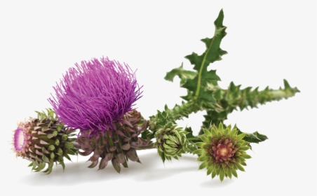

Go To Bottom
This is Plant 1 page
Topic 7Topic 8
Topic 9
Areca Palm
.jpg)
Areca Palm : The Areca Palm, or Dypsis lutescens (formerly Chrysalidocarpus lutescens), is a great palm for a tropical splash in the summertime on home patios and building entrances in northern climates. It can also thrive indoors, but it takes a lot of light for that to happen, and it’s highly rated for cleaning indoor air. Also known as the Butterfly Palm, because of its arching yellowish-green fronds, and the Party Palm, because it’s widely rented for weddings and parties, this less-expensive cousin of the Kentia Palm is a great choice for a long-term relationship if you can give it great light and keep it warm; otherwise, it’s a cheap date you can flirt with all summer and try another one next year.
Flowering plant
.jpg)
Flowering plant : Flowering plants are plants that bear flowers and fruits, and form the clade Angiospermae (/ˌændʒiəˈspɜːrmiː/),[5][6] commonly called angiosperms. The term "angiosperm" is derived from the Greek words angeion ('container, vessel') and sperma ('seed'), and refers to those plants that produce their seeds enclosed within a fruit. They are by far the most diverse group of land plants with 64 orders, 416 families, approximately 13,000 known genera and 300,000 known species.[7] Angiosperms were formerly called Magnoliophyta (/mæɡˌnoʊliˈɒfətə, -əˈfaɪtə/).[8] Like gymnosperms, angiosperms are seed-producing plants. They are distinguished from gymnosperms by characteristics including flowers, endosperm within their seeds, and the production of fruits that contain the seeds. The ancestors of flowering plants diverged from the common ancestor of all living gymnosperms during the Carboniferous, over 300 million years ago.[9] The closest fossil relatives of flowering plants are uncertain and contentious. The earliest record of angiosperm pollen appears around 134 million years ago during the Early Cretaceous. Over the course of the Cretaceous, angiosperms explosively diversified, becoming the dominant group of plants across the planet by the end of the period, corresponding with the decline and extinction of previously widespread gymnosperm groups.
Thistle
